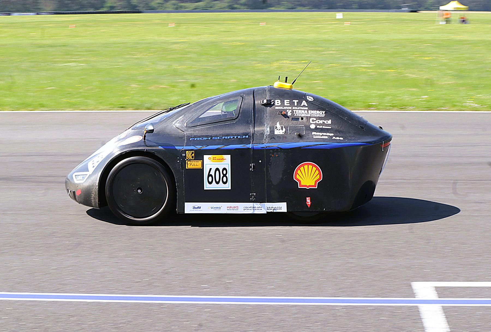
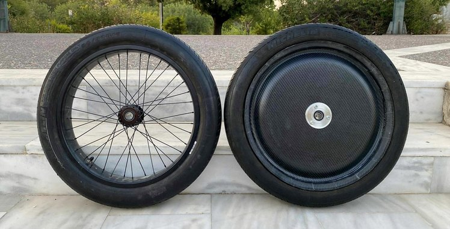
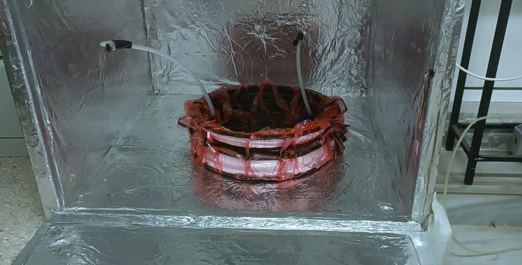
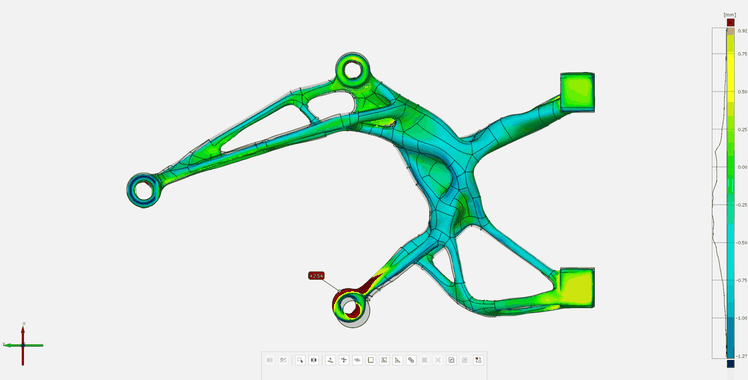
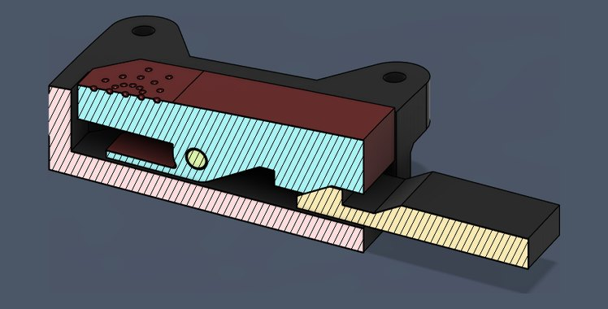
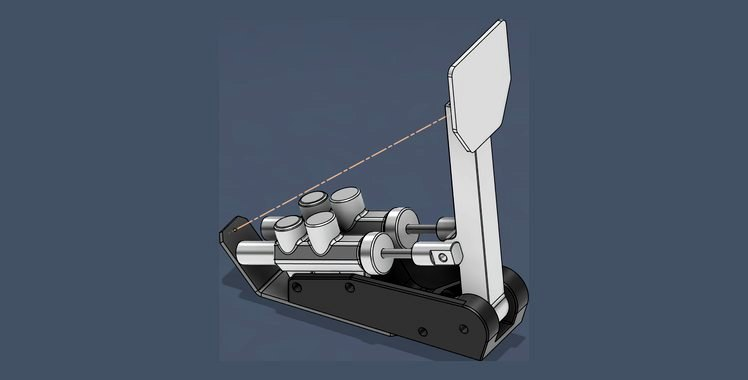
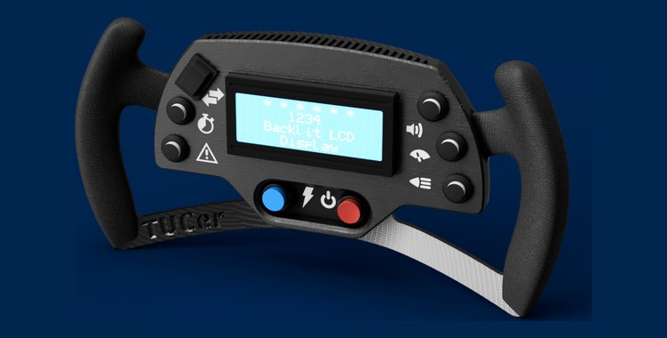
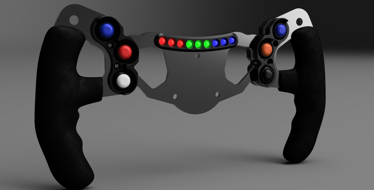

TUCer — Technical University of Crete / Team page
TUCer Team.
Urban Concept Hydrogen prototype for the Shell Eco-marathon, built by TUCer at the Technical University of Crete. Across three roles between 2019 and 2025 I moved from ergonomics and 3D manufacturing, through structural analysis and design, to leading the team.

FIG. 01 — TUCer Urban Concept Hydrogen prototype, Shell Eco-marathon
Team website · Instagram · YouTube · Flickr
Role progression
-
Oct 2023 – Nov 2025
Team Manager & Lead Mechanical Engineer
Overall technical and team leadership, including the master's thesis wheel-development programme — CFRP wheel, test bench, and curing oven case studies — and the SEM 2025 Silesia Ring campaign.
-
Oct 2022 – Nov 2023
Head of Analysis & Design
Transmission & motor-mount optimisation (case study), bodyshell FEA, a bodyshell attach/detach system, brake pedal assembly, a revised ergonomic steering wheel, and a door handle mechanism — culminating in a 6th-place finish at Shell Eco-marathon 2023, Nogaro.
-
Aug 2019 – Jan 2020
Head of Ergonomics & 3D Manufacturing
Steering wheel ergonomic design, a 3D-printed driver's seat, and a bodyshell lighting concept.
Competition results
6th place
Passed technical inspection · DNF (electrical failure)
Projects
Five of these have a case study. Eight more pieces of work came out of the three role eras and have none: bodyshell analysis, the bodyshell attach/detach system, the brake pedal assembly, two generations of ergonomic steering wheel, the door handle mechanism, a 3D-printed driver seat, and a bodyshell lighting concept. Four of the eight are carded below; the rest are named here rather than shown as empty cards.

CFRP Composite Wheel
Single-piece tubeless carbon-fibre wheel — RVE/FEA-validated to Tsai–Wu RF 1.54, -19.2% assembly mass. Best Thesis Award.
Case study →
Wheel Test Bench
Custom instrumented rig with Arduino PID firmware — measured -44%/-59% Wh/km and lower rotational inertia for the new wheel.
Case study →
Composite Curing Oven
Simulink-modelled curing oven, built and used for the wheel's real cure cycles.
Case study →
Metal AM Motor Mount
A 316L printed mount that arrived 12.7× outside tolerance — 3D-scan diagnosis in GOM Inspect, and the specification checklist it produced.
Case study →
Transmission System Redesign
Generative-designed motor mount and driven gear fixing a mesh-misalignment wear problem — -56% gear mass, -91% mount displacement.
Case study →Bodyshell Analysis
Structural analysis of the existing bodyshell, feeding directly into the attach/detach system redesign.

Bodyshell Attach/Detach System
New attach/detach mechanism for the bodyshell, designed from the bodyshell analysis findings.

Brake Pedal Assembly
New brake pedal assembly design.

Steering Wheel — Ergonomic Redesign (v2)
Second iteration of the ergonomic steering wheel, refining the 2019–2020 design.
Door Handle Mechanism
New door handle mechanism — design and implementation.

Steering Wheel — Ergonomic Redesign (v1)
Ergonomic design and structural FEA for a new steering wheel — the first of two iterations.
3D-Printed Driver's Seat
Full design, 3D-print manufacturing, and testing loop for a new driver's seat.
Bodyshell Lighting Concept
Forward-looking concept design for future bodyshell lighting systems — not built or tested.